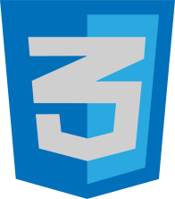
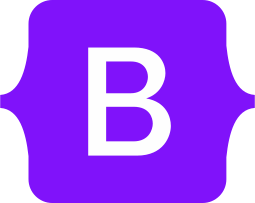
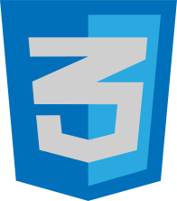
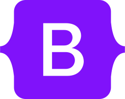
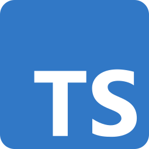
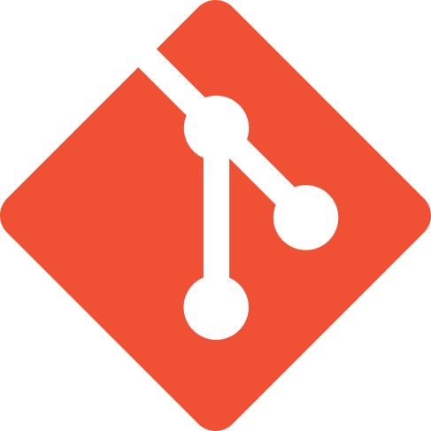
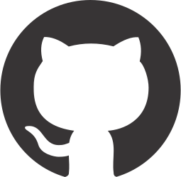
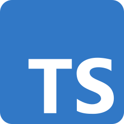
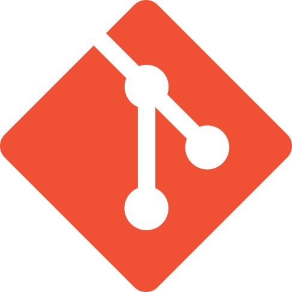
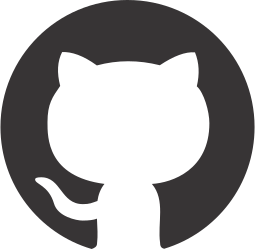

Sobre mim
Me chamo Fernando Cardoso da Silva e no momento estou estudando muito sobre Desenvolvimento Front-End. Minha trajetória profissional começa quando tinha 16 anos quando comecei no mercado de trabalho como Design Gráfico.
Depois de alguns anos migrei de carreira atuando como Vigilante. Fiz o curso com êxito e comecei a trabalhar em 2015 onde atuo até o momento. Após ver um amigo trabalhando na área de TI no back-end, fiquei curioso e ele me mostrou como códigos podem se transformar em uma página web ou algum programa. Ai resolvi entender como isso funciona e acabei gostando muito, foi ai que resolvi voltar ao mundo dos computadores e tecnologias atuando como Desenvolvedor Front-End.
Sou o Fernando e adoraria te mostrar alguns de meus projetos no GitHub e não deixe de ver meu perfil do Linkedin aonde mostro todo meu histórico profissional.
Tecnologias
Clique na imagem para saber a descrição/* descrição */
 



 





Projetos
Serenato Café e Bistrô
Projeto Serenatto Café e Bistrô é um projeto de estudo no qual consiste em uma página web de uma cafeteria de alto padrão. Utilizando as tecnologias HTML, CSS, Bootstrap e JavaScript.
Fokus
Projeto Fokus é pra quem quer estudar ou fazer alguma tarefa mas não sabe quanto tempo precisa. Com o intuito de ajudar com tempo de foco e tempos de descanso curto e longo. Utilizando as tecnologias HTML, CSS e JavaScript.

Gravar Digital
E-commerce de uma gráfica virtual com muitos presentes, carimbos, placas e impressos para você ou para seu negócio. Utilizando as tecnologias HTML, CSS e JavaScript.
Mochila de viagem
Você que vai viajar mas sempre acaba esquecendo algo, com a página da mochila de viagem acabou o seu problema. Podendo adicionar o ítem e a quantidade ou remover quando quiser. Utilizando as tecnologias HTML, CSS e JavaScript.
NandoTube
Uma página tentando replicar ao máximo o YouTube mas contendo somente vídeos sobre o universo da Tecnologia. Utilizando as tecnologias HTML, CSS e JavaScript.